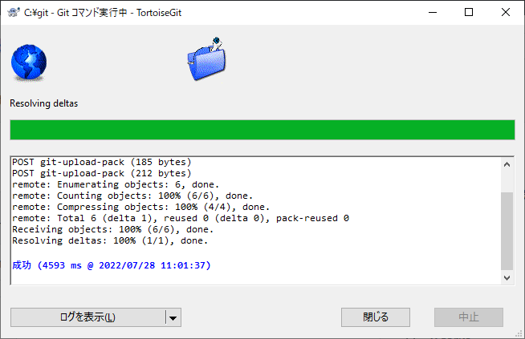

Codeからコピーできる。
TortoiseGitとgithubの連携を行い、TortoiseGitからコミットする。
実は、javaの資料は既にある程度作成済だったので、githubにアップロードしてコミットしたい。
githubに直接アップロードしてもいいけど、ここではTortoiseGitを使ってコミットして目的を果たす。
まず、github上に存在するコードをローカルに持ってきたい。
普通にZipファイルをダウンロードしても持ってこれるが、コミットとかしたいので、gitクローンを行う。
クローンとは、サーバ上のリポジトリをコンピュータへコピーすること。
また、github上にあるリポジトリをリモートリポジトリ、クローンしてPCに持ってきたリポジトリをローカルリポジトリと呼ぶ。
リモートリポジトリはサーバ上のファイルやフォルダ、ローカルリポジトリはそのサーバ上のファイルをフォルダごとコピーしてPCに保存したもの、と思ってください。
また、これから本格的にgitについて解説しますが、基本的には共有サーバとローカルPCのやり取りで考えればわかりやすいと思います。
TortoiseGitはgitのクライアント。gitを使いやすくしてくれる。
インストールして日本語化までする。gitがまだだったらそっちもする。詳細は割愛。下記URL参考に。
Gitのインストール｜サル先生のGit入門【プロジェクト管理ツールBacklog】
ひとまず、どこかにgit用のフォルダを作る。C直下やユーザー直下に「git」とか、わかりやすい名前を付けて作成。
この中にリポジトリを持ってくるイメージ。
C:
└git
├ java-training-document
│ ├─ カンペ集
│ │ ├─ その他資料
│ │ ├─ スケジュール
│ │ └─ 講座内容
│ └─ 課題・ソースコード
│
├ 別のリポジトリ
...
フォルダ構成は上記のようになっていく。
作ったフォルダを右クリックして、gitクローン(複製)...を選択。
下記のようなgitクローン画面が表示される。
gitクローン画面に入力するためのURLを取得する。githubのページの、Codeからコピーできる。
URL:欄に、コピーしたURLを貼り付ける。すると、クローン先のパスにレポジトリ名のディレクトリが自動的に追加される。
また、このディレクトリが存在しない場合、クローン実行時に作成される。

チェックは特にせず、そのままOKを選択。コマンド実行中のウィンドウが表示される。
TortoiseGitとgithubの連携を求める、下記のような画面が表示されている想定。
言われるがままに連携を進めていけばよい。はず。

連携終了すればコマンド実行が再開される。
コマンドが成功したら完了。

gitフォルダを開くと、githubのリポジトリと同じフォルダ構成になっている。

緑のチェックマークについては後述します。
現状では、付いていてもいなくても問題ありません。
リポジトリをローカルに持ってきたので、早速ファイルを追加する。ファイルをコピペするだけなので割愛。

右クリックし、Git コミット(C) > "main"...を選択。

下記のような画面が表示されるので、メッセージを書き込み、コミットするファイルを選択する。

メッセージ(M):
そのままの意味。メッセージ。
1行目がgithubでコミットするときの概要、2行目からが詳細となる。
変更した項目
変更されたファイルの一覧。
チェックされたファイルがコミットされる。
今回は新規ファイルを追加したので、各ファイルの状態は「管轄外」となっている。
コミット(O)をクリックすればコミットが実行され、コマンド実行中のウィンドウが表示される。
コマンドが成功したら完了。
今の作業では、ローカルのリポジトリにしか変更が反映されていない。githubのリポジトリに変更を反映させるため、プッシュする必要がある。
pushとは、ローカルリポジトリの更新をリモートリポジトリへ反映させること。
ローカルPCで編集したファイルを共有サーバにアップロードするイメージ。
さっきのコミット完了のウィンドウの、左下のプッシュ(H)をクリック。
もし閉じていた場合は、リポジトリのフォルダを右クリックし、TortoiseGit > プッシュ(H)...と選択する。
下記のような画面が表示されるので、今回はそのままOKを選択する。
OKを選択すると、いつものコマンド実行画面が表示される。
コマンドが成功すれば完了。

無事にgithubにも変更が反映されている。

TortoiseGitを使っていると、git管理されているファイルやフォルダは、アイコンにマークが付く。
マークがついていない場合は、最新の状態に更新するか、PCを再起動すれば付くようになるはず。

アイコンの種類と意味は以下の通り。この一覧はTortoiseGitの設定から確認できる。